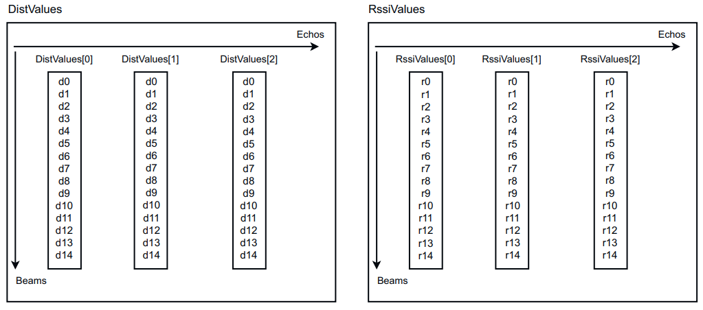

MSGPACK Format¶
The measurement data are transmitted segment by segment, i.e., each transmitted data package contains a segment (cf. the Segmented data output section in the operating instructions). Each segment can be interpreted separately, i.e., it is not necessary to collect all segments in a frame (=all measurement data recorded in one revolution) to start processing. This makes it possible to reduce the latency between the generation of the measurement data and the processing of that data on the client side. The MSGPACK format encodes the measurement data according to the MSGPACK standard (see also
Framing¶
The data packages transmitted in MSGPACK format are enclosed within a frame:
The actual MSGPACK payload data is preceded by 4 <STX> characters (hex code 0x02) and the size of the actual payload data (without the checksum at the end) in bytes as a uint32 value. Following the MSGPACK data is a CRC32 checksum calculated on the MSGPACK data only (without the <STX> characters and packet size). The little-endian representation is used for both the size of the payload and the checksum.
| 4 Bytes | 4 Bytes | 4 Bytes | Variable |
|---|---|---|---|
\x02\x02\x02\x02 |
Size of MSGPACK buffer in bytes | MSGPACK buffer | CRC32 |
MSGPACK Keywords¶
To reduce the bandwidth on the transmission line, the keywords used in MSGPACK are encoded as uint8 values. The bandwidth savings from this are significant, but the user must interpret the read uint8 keywords according to the following table. The description of the keywords in the table is for overview purposes only. A detailed description can be found in the sections referred to in the respective table rows. Exactly the same names for the keywords are used there.
The data packages can be read using standard MSGPACK parsers after removing the framing. For some parsers, options must be set to allow uint8 values as keywords. For the Python msgpack module, for example, the option strict_map_key=False must be set:
Used MSGPACK Keywords And Associated uint8 Codes¶
| Keyword name | Uint8 value | Description |
|---|---|---|
| classname | 0x10 | Keyword for the Scan (see "Serialization of the Scan class") and ScanSegment (see "Serialization of the ScanSegment class") classes represented in the data |
| data | 0x11 | Keyword for the data part, which belongs to the Array, Scan or ScanSegment classes, see "Serialization of the Scan class"; see "Serialization of the ScanSegment class"; see "Serialization of arrays". |
| numOfElems | 0x12 | Number of elements in an array, see "Serialization of arrays" |
| elemSz | 0x13 | Size of an array element in bytes, see "Serialization of arrays" |
| endian | 0x14 | Keyword describing the endianness of the array elements, see "Serialization of arrays" |
| elemTypes | 0x15 | Keyword for the type of array elements, see "Serialization of arrays" |
| Little | 0x30 | Keyword for endianness "little" |
| float32 | 0x31 | Data type float32 |
| uint32 | 0x32 | Data type uint32 |
| uint8 | 0x33 | Data type uint8 |
| uint16 | 0x34 | Data type uint16 |
| ChannelTheta | 0x50 | Data channel with azimuth angles, see "Serialization of the Scan class" |
| ChannelPhi | 0x51 | Data channel with elevation angles, see "Serialization of the Scan class" |
| DistValues | 0x52 | Channel with distance values, see "Serialization of the Scan class" |
| RssiValues | 0x53 | Channel with RSSI values, see "Serialization of the Scan class" |
| PropertiesValues | 0x54 | Channel with further properties of a measurement beam, see "Serialization of the Scan class" and see "Representation of beam characteristics (Properties)" |
| Scan | 0x70 | Keyword for the "Scan" class, see "Serialization of the Scan class" |
| TimestampStart | 0x71 | Start time stamp of a scan, see "Serialization of the Scan class" |
| TimestampStop | 0x72 | Stop time stamp of a scan, see "Serialization of the Scan class" |
| ThetaStart | 0x73 | Azimuth start angle of a scan, see "Serialization of the Scan class" |
| ThetaStop | 0x74 | Azimuth stop angle of a scan, see "Serialization of the Scan class" |
| ScanNumber | 0x75 | Number of a scan, see "Serialization of the Scan class" |
| ModuleId | 0x76 | ModuleID of a scan, see "Serialization of the Scan class" |
| BeamCount | 0x77 | Number of beams in a scan, see "Serialization of the Scan class" |
| EchoCount | 0x78 | Number of echoes in a scan, see "Serialization of the Scan class" |
| ScanSegment | 0x90 | Keyword for the "ScanSegment" class, see "Serialization of the ScanSegment class" |
| SegmentCounter | 0x91 | Segment number of a segment, see "Serialization of the ScanSegment class" |
| FrameNumber | 0x92 | Frame number of a segment, see "Serialization of the ScanSegment class" |
| Availability | 0x93 | Availability of a segment, see "Serialization of the ScanSegment class" |
| SenderId | 0x94 | SenderID of a segment, see "Serialization of the ScanSegment class" |
| SegmentData | 0x96 | Array with the actual measurement data for each layer, see "Serialization of the ScanSegment class" |
| LayerId | 0xA0 | Array with layer IDs, see "Serialization of the ScanSegment class" |
| TelegramCounter | 0xB0 | Telegram counter, see "Serialization of the ScanSegment class" |
Serialization Of A Segment¶
Each data package transmits one segment enclosed within a frame as described below. A segment contains various fields, which are described below. The actual measurement data is located in the SegmentData field, which contains one element of the Scan class for each layer of the sensor.
ScanSegment
├── TelegramCounter
├── TimeStampTransmit
├── SegmentCounter
├── FrameNumber
├── Availability
├── SenderId
├── LayerId
└── SegmentData
├── Scan 1
├── Scan 2
├── ...
└── Scan N
The data of a segment are encoded in MSGPACK format. In addition to some metadata, the ScanSegment class contains an array named SegmentData that contains an object of type Scan for each layer of the sensor. The following exception should be noted: Measurement data in arrays such as distance, RSSI, angle etc. are binary coded here to allow easier serialization (see "Serialization of arrays").
Notation Used¶
The following notes on the notation used relate to the description of the structures encoded in MSGPACK:
-
msgpack_map_headeris used to denote the header of a msgpack map as per the MSGPACK specification -
The keyword names and other names used in the structures correspond to those from Used MSGPACK keywords and associated uint8 codes.
-
Angle brackets are used to specify placeholders for values referred to in the respective declarations, e.g.,
<numOfElems>for the number of elements of an array. -
Keywords printed in bold refer to substructures of a type, e.g., other types or arrays.
-
Although a structure similar to JSON is used for the description in this document, the data is however encoded according to the MSGPACK specification
Serialization Of The ScanSegment Class¶
The ScanSegment class is represented as a nesting of MSGPACK maps as follows:
msgpack_map_header {
"classname": ScanSegment,
"data": msgpack_map_header {
"TelegramCounter": <telegramCounter>,
"TimeStampTransmit": <timeStampTransmit>,
"SegmentCounter": <segmentCounter>,
"FrameNumber": <frameNumber>,
"Availability": <availability>,
"SenderId": <senderId>,
"LayerId": <layerIdVector>,
"SegmentData": <segmentData>
}
}
The meaning of the individual fields is shown in the following table.
Description of the attributes of the ScanSegment class
| Name | Type | Description |
|---|---|---|
| TelegramCounter | MSGPACK int | Counts all telegrams with measurement data sent in MSGPACK format since switching on the device. The counter starts at 1. |
| TimeStampTransmit | MSGPACK int | Sensor system time in µs since 1.1.1970 00:00 in UTC. |
| SegmentCounter | MSGPACK int | Segment counter as described in section. |
| FrameNumber | MSGPACK int | Counts the number of full revolutions since the device was started. |
| Availability | MSGPACK int | Reserved |
| SenderId | MSGPACK int | Device serial code. It can be used to detect on the recipient which sensor the data was sent from. |
| LayerId | MSGPACK array of int | Array of layer indices. The layer indices start at 1 and increase with decreasing elevation angle. |
| SegmentData | MSGPACK array of scans | Array of elements of the Scan class (see "Serialization of the Scan class") that contain the actual measurement data. The following applies: The scan at position i has the layer number LayerId[i]. |
The arrays LayerId and SegmentData are MSGPACK arrays as per the MSGPACK specification and are not represented like arrays containing measurement data (see "Serialization of arrays").
Serialization Of The Scan Class¶
The Scan class is represented as a nesting of MSGPACK maps as follows:
msgpack_map_header {
"classname": Scan,
"data": msgpack_map_header {
"TimeStampStart": <timeStampStart>,
"TimeStampStop": <timeStampStop>,
"ThetaStart": <thetaStart>,
"ThetaStop": <thetaStop>,
"ScanNumber": <scanNumber>,
"ModuleId": <moduleId>,
"ChannelTheta": <channelTheta>,
"ChannelPhi": <channelPhi>,
"DistValues": <distValues>,
"RssiValues": <rssiValues>,
"PropertyValues": <propertyValues>,
"BeamCount": <beamCount>,
"EchoCount": <echoCount>
}
}
The meaning of the individual fields is shown in the following table:
Description of the attributes of the Scan class
| Name | Type | Description |
|---|---|---|
| TimeStampStart | MSGPACK int | Acquisition time of the first beam of the scan in µs. The device's internal time base is used or, if the sensor offers the feature, the time set externally. |
| TimeStampStop | MSGPACK int | Acquisition time of the last beam of the scan in µs. The device's internal time base is used or, if the sensor offers the feature, the time set externally. |
| ThetaStart | MSGPACK int | Azimuth angle of the first beam of the scan in radians. |
| ThetaStop | MSGPACK int | Azimuth angle of the last beam of the scan in radians. |
| ScanNumber | MSGPACK int | Not used. |
| ModuleId | MSGPACK int | Number of the physical module that generated the data. In the case of the multiScan, for example, this is one of the two measuring modules. |
| ChannelTheta | array of float32 | Array of azimuth angles of a specific beam in radians. The encoding of the data in this array is described in "Serialization of arrays". The user can configure whether the array is present in the data structure. |
| ChannelPhi | array of float32 | Array with the elevation angle (cf. operating instructions, Coordinate system section) of the scan in radians. For single layer and multi-layer sensors, this array contains only one element. The encoding of the data in this array is described in "Serialization of arrays". The user can configure whether the array is present in the data structure. |
| DistValues | array of (array of float32) | Array containing an array of distance values for each echo of the scan. The number of sub-arrays corresponds to the number of echoes in the scan, see also the EchoCount field below. The distance values are specified in mm. The encoding of the data in this array is described in "Serialization of arrays". The user can configure whether the array is present in the data structure. |
| RssiValues | array of (array of uint16) | Array containing an array of RSSI values for each echo of the scan. The number of sub-arrays corresponds to the number of echoes in the scan, see also the EchoCount field below. For the representation of RSSI values, see "Representation of RSSI values". The encoding of the data in this array is described in "Serialization of arrays". The user can configure whether the array is present in the data structure. |
| PropertyValues | array of uint8 | Array with additional properties, for example "reflector", for each beam of a scan. See "Representation of beam characteristics (Properties)" for details. The encoding of the data in this array is described in "Serialization of arrays". This array is optional. |
| BeamCount | MSGPACK int | Number of beams in the current scan. |
| EchoCount | MSGPACK int | Number of echoes in the current scan. |
For more details about the MSGPACK int format family, see the official msgpack specification.

The diagram illustrates the nested array structure with 3 echoes and 15 beams, showing how each beam contains values for all echoes in both DistValues and RssiValues arrays.
Serialization Of Arrays¶
Arrays of measurement data (ChannelTheta, ChannelPhi, DistValues, RssiValues and PropertyValues) are encoded as follows:
msgpack_map_header {
"numOfElems": <number of array elements>,
"elemSz": <size of one array element in bytes>,
"endian": little,
"elemTypes": <typesArray>,
"data": <binaryData>
}
The meaning of the individual fields of the Array class are shown in the following table.
Description of the attributes of the Array class
| Name | Description |
|---|---|
| numOfElems | Number of array elements |
| elemSz | Size of an array element in bytes, e.g., 4 for float32 or 1 for uint8. |
| endian | The value is always little |
| elemTypes | Array of element types. Only arrays with one element are supported here. Example: {float32} for an array of float32 values. To represent an array of tuples, elemTypes would therefore have multiple elements. This is not relevant, however. |
| data | Actual payload. The data is encoded as a byte array in the MSGPACK format and can be copied directly into a structure/array after parsing the MSGPACK structure, taking into account the endianness and the data type. |